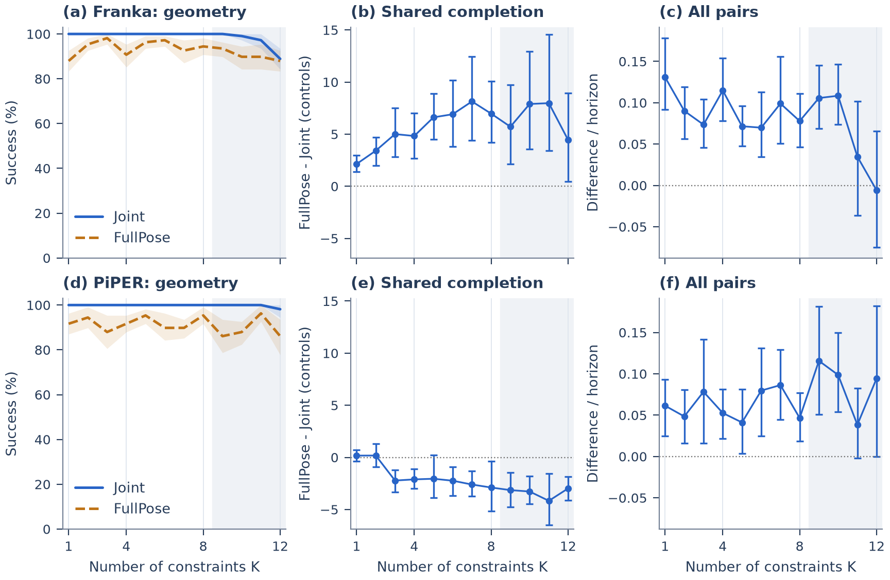
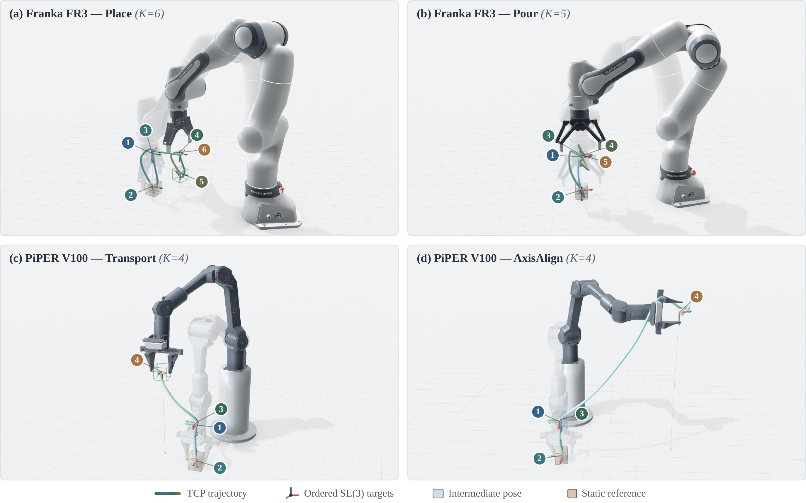
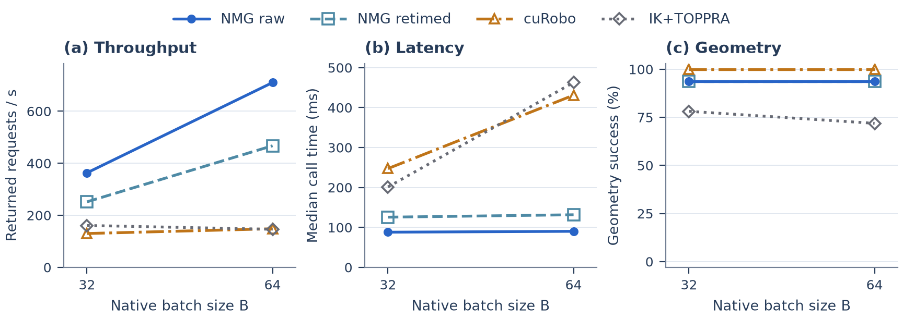
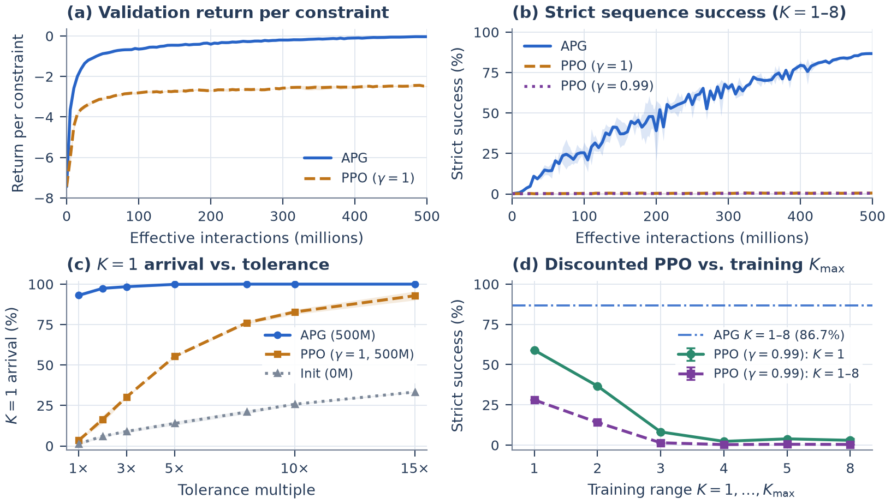
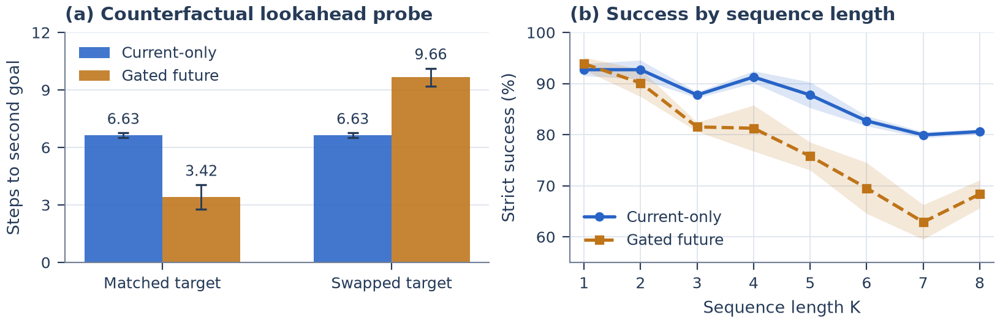

Neural Motion Generator
Learning Ordered Constraint Satisfaction without Demonstrations
Unedited closed-loop rollouts on Franka FR3 and PiPER V100 (trained from scratch, zero demonstrations). Click any video to zoom.
Abstract
Learned motion generators typically imitate offline planners, inheriting their solver biases and data costs, while model-free reinforcement learning struggles to meet tight arrival tolerances over multi-goal sequences. We present Neural Motion Generator (NMG), which trains one closed-loop policy per robot to satisfy variable-length, ordered sequences of joint, position, orientation, and full-pose constraints from random initialization, without demonstrations or task data.
NMG uses differentiable forward kinematics twice: to sample guaranteed-feasible goal sequences from bounded joint chains, and to backpropagate dense arrival costs across complete rollouts with analytic policy gradients (APG). Under a matched budget on Franka FR3, APG reaches 86.7% strict sequence success where PPO stays below 0.6%. Evaluated zero-shot on an obstacle-free kinematic benchmark across 7-DoF Franka FR3 and 6-DoF PiPER, NMG exceeds 98% free-space success (+15 points over closed-loop differential IK on Franka full-pose sequences), extrapolates to unseen sequence lengths, recovers from 1.0 rad joint disturbances, and transfers to manipulation-derived reaching tasks—surpassing cuRobo and differential IK on PiPER while trailing both on Franka. With constant per-step cost, compiled rollouts plan eight-goal full-pose sequences 8.4× faster than cuRobo (4.9× retimed) at 4.8× higher batched throughput.
Method Overview
One four-token Transformer per robot trained end-to-end through differentiable forward kinematics.

Figure 1. Training & rollout overview. Bounded joint chains projected through FK synthesize feasible multi-constraint goals without action labels; full-horizon APG differentiates dense tracking costs directly across closed-loop rollouts.

Figure 2. Unified four-token policy architecture. (a) Active constraint features are normalized then masked and split into an active-goal token (continuous progress, read out directly into the actor) and an active-slot token (shared per-slot sequence and modality embeddings), processed alongside robot state and an action query at O(1) cost independent of K. (b) An optional gated cross-attention branch injects future-goal residuals for the lookahead ablation.
NMG-Bench Results
Independent zero-shot evaluation under strict tolerances (≤0.01 m, ≤0.1 rad, ≤0.01 rad).
Free-Space Ordered Constraints (8,424 Requests / Robot)
In-distribution horizons (K=1–8) vs. unseen count generalization (K=9–12). Geometry and velocity/acceleration-feasible Timed success (%) reported separately.
| Robot | Method | K = 1–8 (In-Dist.) | K = 9–12 (Unseen) | ||
|---|---|---|---|---|---|
| Geom. | Timed | Geom. | Timed | ||
| Franka | cuRobo | 98.9 | 98.9 | 98.6 | 98.6 |
| IK+TOPPRA | 78.9 | 78.9 | 75.0 | 75.0 | |
| NMG raw | 98.2 | N/A | 94.9 | N/A | |
| NMG retimed | 98.2 | 98.2 | 95.0 | 95.0 | |
| PiPER | cuRobo | 99.7 | 99.7 | 99.7 | 99.7 |
| IK+TOPPRA | 78.9 | 78.9 | 76.7 | 76.7 | |
| NMG raw | 98.1 | N/A | 97.3 | N/A | |
| NMG retimed | 98.1 | 98.1 | 97.3 | 97.3 | |
- Exceeds 98% on K=1–8 (+20 pp over IK+TOPPRA) with zero Orientation failures and zero joint-limit violations across all 8,424 requests per robot.
- Beats closed-loop differential IK on FullPose: On Franka FullPose (K=1–8), NMG reaches 94.1% vs. 77.2% (DLS) and 78.9% (joint-limit-aware DLS-JL) at matched ~0.30 ms compiled step cost.
Per-Modality Breakdown
Strict geometry success across Joint, Position, Orientation, FullPose, and Mixed sequences.

Zero-Shot Task-Derived Reaching (1,920 Sequences / Robot)
Five manipulation-derived ordered TCP reaching tasks across three pose-perturbation domains (without gripper actuation or object dynamics).
| Task | Franka FR3 (7-DoF) | PiPER V100 (6-DoF) | ||||
|---|---|---|---|---|---|---|
| cuRobo | IK+TOP. | NMG | cuRobo | IK+TOP. | NMG | |
| PickUp | 100.0 | 100.0 | 99.5 | 100.0 | 9.9 | 100.0 |
| Transport | 99.5 | 99.2 | 99.7 | 82.3 | 66.7 | 94.8 +12.5 |
| Place | 100.0 | 99.0 | 99.0 | 94.8 | 82.6 | 99.2 +4.4 |
| Pour | 99.5 | 90.6 | 54.4 | 100.0 | 78.1 | 89.3 |
| AxisAlign | 100.0 | 98.7 | 89.1 | 55.2 | 8.3 | 71.1 +15.9 |
| Mean | 99.8 | 97.5 | 88.3 | 86.5 | 49.1 | 90.9 +4.4 |
- Top overall on 6-DoF PiPER: 90.9% retimed (90.8% raw) beats cuRobo (86.5%, +4.4 pp), closed-loop DLS (74.3%, +16.5 pp), and joint-limit-aware DLS-JL (89.9%); matches cuRobo on Franka PickUp, Transport, and Place (99.0–99.7%) while trailing cuRobo and DLS-JL (99.0%) overall on Franka due to Pour (54.4%) and AxisAlign (89.1%).
Rollout Summary & Failure Modes
Composite of unseen Atomic trajectories (click to zoom).

- Complementary bottlenecks: PiPER cuRobo fails at grasp (waypoint 2) whereas NMG completes grasp/lift cleanly; Franka Pour misses localize to one narrow translation pocket.
Closed-Loop Differential IK Comparison (Identical Feedback Contract)
Matched per-step action bound (bj = 0.2 rad), joint-limit clipping, 30K step horizon, and strict sequential arrival. DLS and DLS-JL hyperparameters are tuned solely on each robot's 2,048-episode internal development set (Dev. 1–8).
| Robot | Method | Dev. 1–8 | Free-Space Geom. (%) | Atomic Reaching (%) | |||||
|---|---|---|---|---|---|---|---|---|---|
| 1–8 | 9–12 | Pose 1–8 | PickUp | Pour | AxisAlign | Mean | |||
| Franka | DLS | 83.4 | 93.7 | 93.7 | 77.2 | 100.0 | 78.1 | 99.5 | 95.3 |
| DLS-JL | 88.4 | 94.4 | 94.0 | 78.9 | 100.0 | 96.4 | 100.0 | 99.0 | |
| NMG raw | 87.2 | 98.2 | 94.9 | 94.1 | 99.5 | 54.4 | 89.1 | 88.3 | |
| NMG retimed | 87.2 | 98.2 | 95.0 | 94.2 | 99.5 | 54.4 | 89.1 | 88.3 | |
| PiPER | DLS | 83.5 | 97.9 | 97.7 | 92.2 | 75.0 | 88.3 | 18.5 | 74.3 |
| DLS-JL | 86.4 | 97.9 | 97.3 | 91.3 | 93.2 | 89.6 | 71.9 | 89.9 | |
| NMG raw | 91.8 | 98.1 | 97.3 | 92.0 | 100.0 | 89.3 | 71.1 | 90.8 | |
| NMG retimed | 91.8 | 98.1 | 97.3 | 92.1 | 100.0 | 89.3 | 71.1 | 90.9 | |
- Franka Free-Space FullPose (+15.2 pp): Both local Jacobian controllers stall in singular and joint-limit basins on multi-goal FullPose sequences (77.2% DLS and 78.9% DLS-JL vs. NMG's 94.1%).
- 7-DoF Franka Atomic: On unobstructed table-top reaching,
DLS-JLleverages exact runtime Jacobians and kinematic redundancy to reach 99.0% overall vs. NMG's 88.3%, driven primarily by Pour (96.4% vs. 54.4%). - 6-DoF PiPER Atomic: On the non-redundant arm, standard
DLSdrops to 74.3% overall (18.5% on AxisAlign), while NMG reaches 90.8% raw and 90.9% retimed overall, edging pastDLS-JL(89.9%) and cuRobo (86.5%).
Serial Latency & Batched Throughput (Franka, FullPose K=8)
Single NVIDIA RTX PRO 5000 GPU; compiled torch.compile CUDA Graph matching cuRobo's CUDA Graphs.
| Method | B=1 Med. (ms) ↓ | B=1 Mean (ms) ↓ | Geom. / Timed ↑ | B=32 (req/s) ↑ | B=64 (req/s) ↑ |
|---|---|---|---|---|---|
| cuRobo | 103.84 | 108.19 | 100.0 / 100.0 | 129.99 | 148.31 |
| IK+TOPPRA | 19.51 | 26.54 | 81.2 / 81.2 | 159.74 | 146.32 |
| DLS raw | 13.83 | 26.88 | 65.6 / N/A | 588.50 | 1,167.56 |
| DLS retimed | 23.19 | 39.48 | 65.6 / 65.6 | 387.63 | 610.20 |
| DLS-JL raw | 9.26 | 28.12 | 65.6 / N/A | 517.75 | 1,027.71 |
| DLS-JL retimed | 18.04 | 40.40 | 65.6 / 65.6 | 318.95 | 605.14 |
| NMG raw | 12.31 | 17.54 | 93.8 / N/A | 362.42 | 710.15 |
| NMG retimed | 21.39 | 27.40 | 93.8 / 93.8 | 263.33 | 467.37 |
- Constant-cost compiled step (0.30 ms at B=1): Fusing observation construction, the policy, FK, and arrival checks into one
torch.compileCUDA Graph evaluates in 0.30 ms at B=1 and 0.40 ms at B=64, matching compiled DLS/DLS-JL step cost; executable timing is certified via TOPPRA retiming. - Low single-query latency (8.4× raw, 4.9× retimed): At B=1, raw NMG cuts median latency from cuRobo's 103.8 ms to 12.3 ms (21.4 ms retimed at 93.8% timed success; cuRobo additionally checks self-collision and smooths paths).
- Timeout tail explains DLS timings: Although DLS-JL finishes slightly earlier on easy queries (9.3 ms median), its 34.4% timeout tail makes raw NMG faster in mean latency (17.5 vs. 28.1 ms) and inflates DLS/DLS-JL batched req/s (which count failed trajectories). At B=64, NMG scales to 4.8× cuRobo's throughput (710.2 vs. 148.3 req/s).
Native Batch Scaling (B=32 to B=64)
FullPose K=8 throughput, batch latency, and geometry success.

Learning from Scratch: Kinematic APG vs. PPO
Franka FR3, 500M interactions, 2,048 validation sequences (3 seeds for K=1–8).

- Coarse reaching only: Undiscounted PPO reaches most single targets at 5×–15× tolerance, but stalls outside strict 1× (0.5% overall).
- Horizon collapse: Discounted PPO learns single targets (59.0% at Kmax=1), then collapses below 9% by Kmax=3 and under 0.5% at Kmax=8.
- Kinematic APG: Piecewise-analytic pathwise gradients through FK and closed-loop feedback reach 86.7% strict sequence success across K=1–8 over the same 500M interactions.
Closed-Loop Perturbation Recovery (0.03–1.0 rad)
Recovers from up to 1.0 rad (5× per-step bound, 71–94× tolerance spike) in 6–7 median steps (93.8–98.4% settled) and 100% of mid-rollout target switches.

- Large-impulse rejection: Across 0.03–1.00 rad joint disturbances (0.15b to 5b), Franka NMG recovers and holds in 98.4% of trials at every magnitude, while PiPER NMG holds 100% up to 0.50 rad and 93.8% at 1.00 rad (vs. 87.5% for DLS and DLS-JL).
- Target switches & step scaling: Median recovery steps scale from 1 to 6–7 alongside the nominal joint-displacement scale Δ/b; both policies also adapt to 100% of mid-rollout target switches (6.0–7.5 median steps) with zero false completions on infeasible probes.
Counterfactual Future-Context Probe
Gated future conditioning learns lookahead (2.24 rad shift) yet lowers overall accuracy by 9.0 pp.

- Long-horizon convergence cost: Adding the gated future readout matches current-only at K=1 (99.0%) but widens a convergence gap on longer sequences (77.9% vs. 86.9% overall across K=1–8), with essentially unchanged steps on jointly solved sequences (43.6 vs. 43.9).
- Within-condition lookahead probe: On its eligible pairs (29/26/30), gated future shifts arrival posture by 2.24 rad and finishes matched second targets in far fewer steps than swapped ones (3.42 vs. 9.66), whereas current-only (32/32/31 eligible pairs) produces identical arrivals and suffix steps (6.63 vs. 6.63).
BibTeX